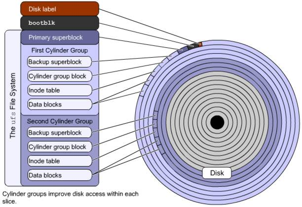
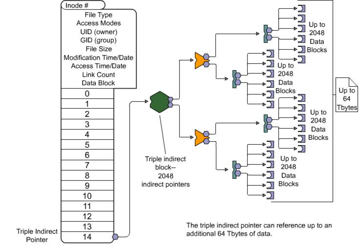

Management des disques sous Solaris
Contents
1 Introduction
Comparé à Linux, Solaris est assez ressemblant sauf sur certains points dont je vais éclairsir ici tous soupsons. Il n'y aura pas que du Solaris mais également des infos concernant l'architechture disques / filesystems en générale.
2 Fonctionnement physique
2.1 Fichiers, Inodes et Blocks
Sur votre disque dur, là ou vous mettez vos données, il y a sous forme hiérarchique:
- Les dossiers et fichiers
- Les inodes
- Les blocks
Ce sont les inodes qui savent ou exactement sont situés tel ou tel dossier/fichier. Lorsque vous faites une création ou appel d'un fichier par exemple, il pointe vers un inode. Cet inode est ensuite capable de dire à quel Data block il appartient (tranche binaire). Voici une petite explication en image :
{kind=link}
2.2 Reconnaissance hardware
Pour reconnaitre ou se situe tel ou tel device sur notre système, voici une petite explication :
Admettons que dans le /dev, j'ai un fichier du type : c0t0d0s0. Cela signifie que :
- c0 : Sur le Controleur 0
- t0 : Du Target SCSI 0
- d0 : J'ai un Disk 0
- s0 : Et je suis positionné sur la Slice 0
Voici quelques exemples :
2.2.1 SCSI
{kind=link}
2.2.2 IDE
{kind=link}
2.3 Slices
Ensuite, les slices (appellés également partitions) sont définies de la sorte pour une meilleure optimisation des performances :
{kind=link}
3 Et sur ma machine ?
Pour commencer, il faudrait savoir ce qu'il y a sur sa machine. Pour celà, 3 solutions :
3.1 path_to_inst
cat /etc/path_to_inst
# # Caution! This file contains critical kernel state # "/pseudo" 0 "pseudo" "/options" 0 "options" "/xsvc" 0 "xsvc" "/objmgr" 0 "objmgr" "/scsi_vhci" 0 "scsi_vhci" "/isa" 0 "isa" "/isa/i8042@1,60" 0 "i8042" "/isa/i8042@1,60/keyboard@0" 0 "kb8042" "/isa/i8042@1,60/mouse@1" 0 "mouse8042" "/isa/lp@1,378" 0 "ecpp" "/isa/asy@1,3f8" 0 "asy" "/isa/asy@1,2f8" 1 "asy" "/isa/fdc@1,3f0" 0 "fdc" "/isa/fdc@1,3f0/fd@0,0" 0 "fd" "/ramdisk" 0 "ramdisk" "/pci@0,0" 0 "pci" "/pci@0,0/display@f" 0 "vgatext" "/pci@0,0/pci8086,7191@1" 0 "pci_pci" "/pci@0,0/pci-ide@7,1" 0 "pci-ide" "/pci@0,0/pci-ide@7,1/ide@0" 0 "ata" "/pci@0,0/pci-ide@7,1/ide@0/cmdk@0,0" 0 "cmdk" "/pci@0,0/pci-ide@7,1/ide@1" 1 "ata" "/pci@0,0/pci-ide@7,1/ide@1/sd@0,0" 16 "sd" "/pci@0,0/pci1000,30@10" 0 "mpt" "/pci@0,0/pci1022,2000@11" 0 "pcn" "/iscsi" 0 "iscsi"
3.2 Prtconf
prtconf | grep -v not
System Configuration: Sun Microsystems i86pc
Memory size: 512 Megabytes
System Peripherals (Software Nodes):
i86pc
scsi_vhci, instance #0
isa, instance #0
i8042, instance #0
keyboard, instance #0
mouse, instance #0
fdc, instance #0
pci, instance #0
pci8086,7191, instance #0
pci-ide, instance #0
ide, instance #0
cmdk, instance #0
ide, instance #1
sd, instance #16
display, instance #0
pci1000,30, instance #0
pci1022,2000, instance #0
iscsi, instance #0
pseudo, instance #0
options, instance #0
xsvc, instance #0
objmgr, instance #03.3 Format
format
Searching for disks...done
AVAILABLE DISK SELECTIONS:
0. c0d0 <DEFAULT cyl 4174 alt 2 hd 255 sec 63>
/pci@0,0/pci-ide@7,1/ide@0/cmdk@0,04 Ajout d'un périphérique
4.1 Avec Reboot
Pour que notre disque soit détecté au démarrage, il faut créer un fichier /reconfigure :
touch /reconfigure
Ensuite, il suffit de brancher son périphérique et de redémarrer sa machine. Une fois fait, configurez les slices.
4.2 Sans Reboot
Si c'est une machine "critique", il vous faut alors exécuter la commande "devfsadm". Cette commande va essayer de matcher les drivers loadés du kernel avec les devices dans /devices (quelle belle invention de verbes :-p).
Voici quelques exemples d'utilisation :
- Définition de périphériques tel que disk, tape, port, audio ou pseudo :
devfsadm -c disk -c tape -c audio
- Configurer seulement un périphérique en fonction du driver :
devfsadm -i driver_name
- Configurer les disques seulement supportés par certains controleurs (dad, st ou sd)
devfsadm -i dad
- Pour le mode verbeux
devfsadm -v
- Pour flusher (clear) les liens symboliques qui pointent sur des devices inexistants :
devfsadm -c
5 Partitionnements
Le partitionnement du disque est fait de Slices qui sont délimités par des cylindres. En effet un Slice occupe une tranche de cylindres (ex : 1 à 2850). Puis le slice d'après ira de 2850 à 5000.
Les partitions sont donc déterminées à partir du premier cylindre de chaque slice :
- Slice 1 : Cylindre 0 à 2850
- Slice 2 : Cylindre 2850 à 5000
...
5.1 Gaspillage
Le gaspillage de cylindres entraine un slice potentiellement vide. Vous pouvez l'utiliser plus tard. Cependant, en cas de secteurs défectueux, il est possible que la partition rétrecisse due aux cylindres perdues.
5.2 Overlapping
L'overlapping arrive quand plusieurs slices accèdent au même cylindre (généralement empiètement d'un slice sur un autre). Pour corrigé ce problème, lorsque vous éditez votre partition, utilisez la commande "modify" :
modify
Select partitioning base:
0. Current partition table (unnamed)
1. All Free Hog
Choose base (enter number) [0]? 0
Warning: Overlapping partition (1) in table.
Warning: Fix, or select a different partition table.5.3 Définition des partitions
La commande format fait automatiquement le partitionnement par rapport aux données inscrites dans /etc/format.dat. L'avantage c'est que c'est super rapide et facile lors de l'ajout de disque. Maintenant, de manière manuelle, voici comment faire :
format
Searching for disks...done
AVAILABLE DISK SELECTIONS:
0. c0t0d0 <ST38410A cyl 16706 alt 2 hd 16 sec 63>
/pci@1f,0/pci@1,1/ide@3/dad@0,0
1. c1t3d0 <SUN9.0G cyl 4924 alt 2 hd 27 sec 133>
/pci@1f,0/pci@1/scsi@1/sd@3,0
Specify disk (enter its number):Nous avons maintenant la liste des disques détectés. Nous allons choisir le deuxième disque et continuer :
Specify disk (enter its number): 1
selecting c1t3d0
[disk formatted]
FORMAT MENU:
disk - select a disk
type - select (define) a disk type
partition - select (define) a partition table
current - describe the current disk
format - format and analyze the disk
repair - repair a defective sector
label - write label to the disk
analyze - surface analysis
defect - defect list management
backup - search for backup labels
verify - read and display labels
save - save new disk/partition definitions
inquiry - show vendor, product and revision
scsi - independent SCSI mode selects
cache - enable, disable or query SCSI disk cache
volname - set 8-character volume name
!<cmd> - execute <cmd>, then return
quit
format>Dans les menus que l'on peut voir, changer ou confirmer des choix des partitions, nous avons :
| Eléments | Fonctions |
|---|---|
| partition | Affiche le menu des partitions |
| label | Ecris la liste des noms des partitions en cours sur le disque |
| verify | Lis et affiche le nom des disques |
| quit | Quitter l'utilitaire format |
Tapez ensuite partition pour voir le menu :
format> partition
PARTITION MENU:
0 - change '0' partition
1 - change '1' partition
2 - change '2' partition
3 - change '3' partition
4 - change '4' partition
5 - change '5' partition
6 - change '6' partition
7 - change '7' partition
select - select a predefined table
modify - modify a predefined partition table
name - name the current table
print - display the current table
label - write partition map and label to the disk
!<cmd> - execute <cmd>, then return
quitVoici les options proposées :
| Eléments | Fonctions |
|---|---|
| 0-7 | Spécifier la taille de la partition et l'offset |
| select | Choisir un slice prédéfinit dans /etc/format.dat |
| modify | Change la partition en cours dans la table |
| quit | Sert à identifier la table des paritions dans /etc/format.dat |
| Affiche la table des partitions en cours | |
| label | Ecrit la table des partitions en cours |
| !<cmd> | Exécute une commande externe au niveau du shell |
Pour afficher la nouvelle table des partitions, tapez print :
partition> print
Current partition table (original): Total disk cylinders available: 4924 + 2 (reserved cylinders) Part Tag Flag Cylinders Size Blocks 0 unassigned wm 0 0 (0/0/0) 0 1 unassigned wm 0 0 (0/0/0) 0 2 backup ru 0 - 4923 8.43GB (4924/0/0) 17682084 3 unassigned wu 0 0 (0/0/0) 0 4 unassigned wm 0 0 (0/0/0) 0 5 unassigned wm 0 0 (0/0/0) 0 6 unassigned wu 0 0 (0/0/0) 0 7 unassigned wm 0 0 (0/0/0) 0
Voici la signification des colonnes :
| Nom des colonnes | Descriptions |
|---|---|
| Part | Numéro de Slice du disque |
| Tag | Tag prédéfini (optionnel) |
| Flag | Flag prédéfini (optionnel) |
| Cylinders | Cylindre de début et de fin du slice |
| Size | Taille du slice en blocks (b), cylindres (c), Mbytes (MB), ou Gbytes (GB) |
| Blocks | Nombre total de cylindres et secteurs par slices |
Pour commencez le disque, tapez 0 :
partition> 0
Part Tag Flag Cylinders Size Blocks 0 unassigned wm 0 0 (0/0/0) 0
Tapez ? pour avoir la liste des choix possible :
Enter partition id tag[unassigned]: ?
Expecting one of the following: (abbreviations ok):
unassigned boot root swap
usr backup stand var
home alternates reserved
Enter partition id tag[unassigned]:Tapez alternates :
Enter partition id tag[unassigned]: alternates
Tapez ? pour avoir la liste des choix possible :
Enter partition permission flags[wm]: ?
Expecting one of the following: (abbreviations ok):
wm - read-write, mountable
wu - read-write, unmountable
rm - read-only, mountable
ru - read-only, unmountable
Enter partition permission flags[wm]:Tappez sur la touche "Entrée" :
Enter partition permission flags[wm]:
Encore une fois "Entrée" pour accepter le cylindre 0 pour début :
Enter new starting cyl[0]:
Entrez la taille de la partition (ici 980mb) :
Enter partition size[0b, 0c, 0e, 0.00mb, 0.00gb]: 980mb
Vérifions :
partition> print
Current partition table (unnamed): Total disk cylinders available: 1965 + 2 (reserved cylinders) Part Tag Flag Cylinders Size Blocks 0 alternates wm 0 - 558 980.16MB (559/0/0) 200736 1 unassigned wm 0 0 (0/0/0) 0 2 backup ru 0 - 4923 8.43GB (4924/0/0) 17682084 3 unassigned wm 0 0 (0/0/0) 0 4 unassigned wm 0 0 (0/0/0) 0 5 unassigned wm 0 0 (0/0/0) 0 6 unassigned wu 0 0 (0/0/0) 0 7 unassigned wm 0 0 (0/0/0) 0
Nous ponvons voir les changements. Ajustons le cylindre de début de slice 1 :
partition> 1
Part Tag Flag Cylinders Size Blocks 1 unassigned wm 0 0 (0/0/0) 0
Entrez "swap" :
Enter partition id tag[unassigned]: swap
Tapez "wu" :
Enter partition permission flags[wm]: wu
Entrez le cylindre de début de slice 1 :
Enter new starting cyl[0]: 559
Entrez la nouvelle taille de la partition :
Enter partition size[0b, 0c, 603e, 0.00mb, 0.00gb]: 512mb
Vérifions :
partition> print
Current partition table (unnamed): Total disk cylinders available: 1965 + 2 (reserved cylinders) Part Tag Flag Cylinders Size Blocks 0 alternates wm 0 - 558 980.16MB (559/0/0) 2007369 1 swap wu 559 - 851 513.75MB (293/0/0) 1052163 2 backup ru 0 - 4923 8.43GB (4924/0/0) 17682084 3 unassigned wm 0 0 (0/0/0) 0 4 unassigned wm 0 0 (0/0/0) 0 5 unassigned wm 0 0 (0/0/0) 0 6 unassigned wu 0 0 (0/0/0) 0 7 unassigned wm 0 0 (0/0/0) 0
Faisons la même chose pour le slice 7 :
partition> 7
Part Tag Flag Cylinders Size Blocks 7 unassigned wm 0 0 (0/0/0) 0
Tapez "home" :
Enter partition id tag[unassigned]: home
Tapez sur la touche "Entrée" :
Enter partition permission flags[wm]:
Entrez le cylindre de début :
Enter new starting cyl[0]: 852
Entrez la valeur "$" pour occuper tout l'espace libre disponible à cette partition :
Enter partition size[0b, 0c, 694e, 0.00mb, 0.00gb]: $
Vérifions :
partition> print
Current partition table (unnamed): Total disk cylinders available: 1965 + 2 (reserved cylinders) Part Tag Flag Cylinders Size Blocks 0 alternates wm 0 - 558 980.16MB (559/0/0) 2007369 1 swap wu 559 - 851 513.75MB (293/0/0) 1052163 2 backup ru 0 - 4923 8.43GB (4924/0/0) 17682084 3 unassigned wm 0 0 (0/0/0) 0 4 unassigned wm 0 0 (0/0/0) 0 5 unassigned wm 0 0 (0/0/0) 0 6 unassigned wu 0 0 (0/0/0) 0 7 home wm 852 - 4923 6.97GB (4072/0/0) 14622552
Après avoir vérifié qu'il n'y a pas d'erreurs, tapez label :
partition> label Ready to label disk, continue? y
5.4 Vérification des labels
Pour vérifier les labels (appellé également VTOC), il y a 2 solutions :
- Utiliser verify dans l'utilitaire format
- utiliser la commande prtvtoc
5.4.1 Lecture du VTOC avec Format
Ouvrez l'utilitaire format, puis tapez verify :
format> verify
Primary label contents: Volume name = < > ascii name = <SUN9.0G cyl 4924 alt 2 hd 27 sec 133> pcyl = 4926 ncyl = 4924 acyl = 2 nhead = 27 nsect = 133 Part Tag Flag Cylinders Size Blocks 0 alternates wm 0 - 558 980.16MB (559/0/0) 2007369 1 swap wu 559 - 851 513.75MB (293/0/0) 1052163 2 backup ru 0 - 4923 8.43GB (4924/0/0) 17682084 3 unassigned wu 0 0 (0/0/0) 0 4 unassigned wm 0 0 (0/0/0) 0 5 unassigned wm 0 0 (0/0/0) 0 6 unassigned wu 0 0 (0/0/0) 0 7 home wm 852 - 4923 6.97GB (4072/0/0) 14622552
Pour quittez tapez q.
5.4.2 Lecture du VTOC avec Prtvtoc
Lancez la commande sur un disque :
prtvtoc /dev/dsk/c1t3d0s0
* /dev/dsk/c1t3d0s0 partition map
*
* Dimensions:
* 512 bytes/sector
* 133 sectors/track
* 27 tracks/cylinder
* 3591 sectors/cylinder
* 4926 cylinders
* 4924 accessible cylinders
*
* Flags:
* 1: unmountable
* 10: read-only
*
* First Sector Last
* Partition Tag Flags Sector Count Sector Mount Directory
0 9 00 0 2007369 2007368
1 3 01 2007369 1052163 3059531
2 5 11 0 17682084 17682083
7 8 00 3059532 14622552 17682083Voici quelques explications :
| Champs | Descriptions |
|---|---|
| Dimensions | Décrit les dimentions logiques du disque |
| Flags | Décrit les flags listés dans la table des partitions |
| Partition | Le numéro du slice décrit plus tard dans la table des partitions |
| Tag | Valeur utilisée pour dire comment le disque va être utilisé, décrit plus tard dans la table des partitions |
| Flags | Le flag 00 est pour "read/write, mountable"; 01 est "read/write, unmountable"; et 10 est "read only" |
| First Sector | Définit le premier secteur pour le slice |
| Sector Count | Définit le nombre total de secteurs dans le slice |
| Last Sector | Définit le dernier secteur dans le slice |
| Mount Directory | Si ce champs est vide, aucunes entrée sera définit dans "/etc/vfstab" et le slice ne sera pas monté au démarrage |
6 En cas de problèmes
6.1 Relabeller les disques
La commande fmthard permet de relabeller les disques. Tout d'abord, sauvegardons le VTOC actuel dans un fichier :
prtvtoc /dev/dsk/c1t3d0s0 > /var/tmp/c1t3d0.vtoc
Nous pouvons sauvegarder le VTOC d'un autre disque dans un fichier pour le relabeller sur un nouveau disque :
fmthard -s datafile /dev/rdsk/c#t#d#s2
Ouvrir format, sélectionnez le disque et lui donner le nom voulu. Ensuite réinjecter le VTOC sauvegardé :
mthard -s /var/tmp/c1t3d0.vtoc /dev/rdsk/c1t3d0s2
Enfin, pour initialiser le disque :
fmthard -s /dev/null /dev/rdsk/c1t3d0s2
7 Les FileSystems
Il existe sous Solaris 4 types de FileSystems :
- ufs : FileSystem le plus utilisé sous Solaris. Il peux aller facilement jusqu'a des Terabits, est basé sur le système Berkeley
- hsfs : System Sierra un peu particulier
- pcfs : Pour le FAT32 et le DOS
- udfs : Universal Disk File System, ceci est pour les medias CD/DVD...
Voici une description de l'UFS :

{kind=link}
Ainsi que le fonctionnement des inodes :

{kind=link}
7.1 Création du FileSystem
La commande newfs permet de faire celà :
newfs /dev/rdsk/c1t3d0s7
Répondez y à cette confirmation :
newfs: construct a new file system /dev/rdsk/c1t3d0s7: (y/n)?
Il nous affiche maintenant les informations sur la création du filesystem :
/dev/rdsk/c1t3d0s7: 6295022 sectors in 1753 cylinders of 27 tracks, 133 sectors 3073.7MB in 110 cyl groups (16 c/g, 28.05MB/g, 3392 i/g) super-block backups (for fsck -F ufs -o b=#) at: 32, 57632, 115232, 172832, 230432, 288032, 345632, 403232, 460832, 518432, 5746208, 5803808, 5861408, 5919008, 5976608, 6034208, 6091808, 6149408, 6207008, 6264608,
On affiche l'espace libre
fstyp -v /dev/dsk/c0t1d0s6 |head
(output omitted for brevity) minfree 10% maxbpg 2048 optim time
L'option -m définit le pourcentage d'espace disque que nous voulons utiliser :
newfs -m 2 /dev/dsk/c0t1d0s6
newfs: construct a new file system /dev/rdsk/c0t1d0s6: (y/n)? y (output omitted for brevity)
Voilà le résultat :
fstyp -v /dev/dsk/c0t1d0s6 |head
(output omitted for brevity minfree 2% maxbpg 2048 optim time
Vérification :
fstyp -v /dev/rdsk/c0t0d0s0 | head ufs magic 11954 format dynamic time Fri Oct 22 10:09:11 2004 sblkno 16 cblkno 24 iblkno 32 dblkno 456 sbsize 5120 cgsize 5120 cgoffset 72 cgmask 0xffffffe0 ncg 110 size 3147511 blocks 3099093 bsize 8192 shift 13 mask 0xffffe000 fsize 1024 shift 10 mask 0xfffffc00 frag 8 shift 3 fsbtodb 1 minfree 2% maxbpg 2048 optim time maxcontig 128 rotdelay 0ms rps 120
Pour changer l'espace dispo :
tunefs -m 1 /dev/rdsk/c0t0d0s0
minimum percentage of free space changes from 10% to 1%
7.2 Vérification de l'état des disques
La commande fsck comme sous linux permet de vérifier l'intégralité du filesystem afin de réparer les éventuels inodes orphelins (n'oubliez pas de démonter la partition avant d'effectuer cette manipulation):
fsck /dev/rdsk/c0t0d0s7
** /dev/rdsk/c0t0d0s7 ** Last Mounted on /export/home ** Phase 1 - Check Blocks and Sizes INCORRECT BLOCK COUNT I=743 (5 should be 2) CORRECT?
Si il y a des fichiers qui sont récupérables, vous les retrouverez dans "lost+found". Vérifiez si ils sont correct avec la commande "file". On estime que si "file" peut trouver quel type de fichier c'est, alors c'est correcte.
8 Vfstab
Le fichier /etc/vfstab est l'équivalent de /etc/fstab sous linux. C'est lui qui liste toutes les partitions et leurs points de montage.
#device device mount FS fsck mount mount #to mount to fsck point type pass at boot options # fd - /dev/fd fd - no - /proc - /proc proc - no - /dev/dsk/c0t0d0s1 - - swap - no - /dev/dsk/c0t0d0s0 /dev/rdsk/c0t0d0s0 / ufs 1 no - /dev/dsk/c0t0d0s6 /dev/rdsk/c0t0d0s6 /usr ufs 1 no - /dev/dsk/c0t0d0s3 /dev/rdsk/c0t0d0s3 /var ufs 1 no - /dev/dsk/c0t0d0s7 /dev/rdsk/c0t0d0s7 /export/home ufs 2 yes - /devices - /devices devfs - no - ctfs - /system/contract ctfs - no - objfs - /system/object objfs - no - swap - /tmp tmpfs - yes -
8.1 mtab
Le fichier /etc/mtab quand à lui nou informe des montages par rapport au kernel :
more /etc/mnttab
/dev/dsk/c0t0d0s0 / ufs rw,intr,largefiles,logging,xattr,onerror=panic,dev=2200008 1098604644 /devices /devices devfs dev=4a80000 1098604620 ctfs /system/contract ctfs dev=4ac0001 1098604620 proc /proc proc dev=4b00000 1098604620 mnttab /etc/mnttab mntfs dev=4b40001 1098604620 swap /etc/svc/volatile tmpfs xattr,dev=4b80001 1098604620 objfs /system/object objfs dev=4bc0001 1098604620 /dev/dsk/c0t0d0s6 /usr ufs rw,intr,largefiles,logging,xattr,onerror=panic,dev=220000e 1098604645 fd /dev/fd fd rw,dev=4d40001 1098604645 /dev/dsk/c0t0d0s3 /var ufs rw,intr,largefiles,logging,xattr,onerror=panic,dev=220000b 1098604647 swap /var/run tmpfs xattr,dev=4b80002 1098604647 swap /tmp tmpfs xattr,dev=4b80003 1098604647 /dev/dsk/c0t0d0s7 /export/home ufs rw,intr,largefiles,logging,xattr,onerror=panic,dev=220000f 1098604661 -hosts /net autofs nosuid,indirect,ignore,nobrowse,dev=4dc0001 1098604678 auto_home /home autofs indirect,ignore,nobrowse,dev=4dc0002 1098604678 sys-01:vold(pid491) /vol nfs ignore,noquota,dev=4e00001 1098604701
mount
/ on /dev/dsk/c0t0d0s0 read/write/setuid/devices/intr/largefiles/logging/xattr/onerror=panic/dev=2200008 on Sun Oct 24 08:57:24 2004 /devices on /devices read/write/setuid/devices/dev=4a80000 on Sun Oct 24 08:57:00 2004 /system/contract on ctfs read/write/setuid/devices/dev=4ac0001 on Sun Oct 24 08:57:00 2004 /proc on proc read/write/setuid/devices/dev=4b00000 on Sun Oct 24 08:57:00 2004 /etc/mnttab on mnttab read/write/setuid/devices/dev=4b40001 on Sun Oct 24 08:57:00 2004 /etc/svc/volatile on swap read/write/setuid/devices/xattr/dev=4b80001 on Sun Oct 24 08:57:00 2004 /system/object on objfs read/write/setuid/devices/dev=4bc0001 on Sun Oct 24 08:57:00 2004 /usr on /dev/dsk/c0t0d0s6 read/write/setuid/devices/intr/largefiles/logging/xattr/onerror=panic/dev=220000e on Sun Oct 24 08:57:25 2004 /dev/fd on fd read/write/setuid/devices/dev=4d40001 on Sun Oct 24 08:57:25 2004 /var on /dev/dsk/c0t0d0s3 read/write/setuid/devices/intr/largefiles/logging/xattr/onerror=panic/dev=220000b on Sun Oct 24 08:57:27 2004 /var/run on swap read/write/setuid/devices/xattr/dev=4b80002 on Sun Oct 24 08:57:27 2004 /tmp on swap read/write/setuid/devices/xattr/dev=4b80003 on Sun Oct 24 08:57:27 2004 /export/home on /dev/dsk/c0t0d0s7 read/write/setuid/devices/intr/largefiles/logging/xattr/onerror=panic/dev=220000f on Sun Oct 24 08:57:41 2004
9 Monter les partitions
Pour monter les partitions à la main, il existe la commande mount. Voici quelques exemples :
Monte le filesystem en lecture seule :
mount -o ro /dev/dsk/c0t0d0s7 /export/home
Met des sticky bits sur toute la partition :
mount -o ro,nosuid /dev/dsk/c0t0d0s7 /export/home
Supprime les dates d'accès à chaques fichiers, ce qui optimise les temps d'accès
mount -o noatime /dev/dsk/c0t0d0s7 /export/home
Si cette partition ne contient que des petits fichiers, utilisez cette option :
mount -o nolargefiles /dev/dsk/c0t0d0s7 /export/home
Pour monter tout le contenu de votre fichier /etc/vfstab utilisez cette commande :
mountall
Pour ne monter que ce qui se trouve en local :
mountall -l
9.1 Détrminer le type de montage
Afin de savoir quelles options il faut passer, voici des fichiers intéressants :
- /etc/vfstab pour FS
- /etc/default/fs pour un système de fichiers en local
- /etc/dfs/fstypes pour un système de fichiers distants
Pour connaitre les caractéristiques d'une partition :
fstyp /dev/rdsk/c0t0d0s7
ufs
Vous pouvez lors du montage d'une partition spécifier si c'est du hsfs ou pcfs :
mount -F hsfs -o ro /dev/dsk/c0t6d0s0 /cdrom
Pour démonter une partition, ca se passe comme cela :
umount mount_point
Et pour forcer, utilisez l'option -f :
umount -f mount_point
10 Que se passe t'il sur ma partition ?
fuser est ce qui permet sous Solaris de savoir qu'est-ce qui se passe sur la partition. Sous linux, c'est lsof. Pour lister tous les process en cours sur cette partition :
fuser -cu mount_point
Pour tuer tous les process :
fuser -ck mount_point
Vérifier qu'aucuns process n'est sur la partition :
fuser -c mount_point
11 Problèmes avec ma partiton root
Si vous voulez faire un fsck de la partition root, insérez le CD/DVD Sun puis tapez ceci :
ok boot cdrom -s
Boot device: /pci@1f,0/pci@1,1/ide@3/cdrom@2,0:f File and args -s SunOS Release 5.10 Generic 64 bit Copyright 1983-2004 by Sun Microsystems, Inc. All rights reserved. Booting to milestone "milestone/single-user:default" Configuring /dev and /devices Use is subject to license terms Using RPC Bootparams for network configuration information. Skipping interface hme0 - INIT: SINGLE USER MODE
Lancez le fsck sur votre partition root (racine) :
fsck /dev/rdsk/c0t0d0s0
Si tout à bien fonctionné, vous devez pouvoir tout monter :
mount /dev/dsk/c0t0d0s0 /a
Dans le cas contraire, il faut afiner /etc/vfstab :
TERM=sun export TERM vi /a/etc/vfstab
Ensuite on quitte et on redémarre :
cd / umount /a
12 Accès aux devices amovibles
12.1 Avec Vold
Ou trouver les périphériques :
| Media | Accès filesystem | Accès monté |
|---|---|---|
| diskette | /floppy/floppy0 | /vol/dev/aliases/floppy0 |
| CD-ROM | /cdrom/cdrom0 | /vol/dev/aliases/cdrom0 |
| Jaz | /rmdisk/jaz0 | /vol/dev/aliases/jaz0 |
| Zip | /rmdrive/zip0 | /vol/dev/aliases/zip0 |
| PCMCIA | /pcmem0 | /vol/dev/aliases/pcmem0 |
Il existe 2 fichiers qui permettent de gérer les actions lors des injections/ejections de media :
- /etc/vold.conf
- /etc/rmmount.conf
Vold est un service (start, stop...) :
/etc/init.d/volmgt restart
Si vraiment il ne veut pas quitter :
pkill -9 vold
12.2 Sans Vold
Evidement il faut là tout faire à la main :
mount -F hsfs -o ro /dev/dsk/c0t6d0s0 /cdrom mount -F pcfs /dev/diskette /pcfs